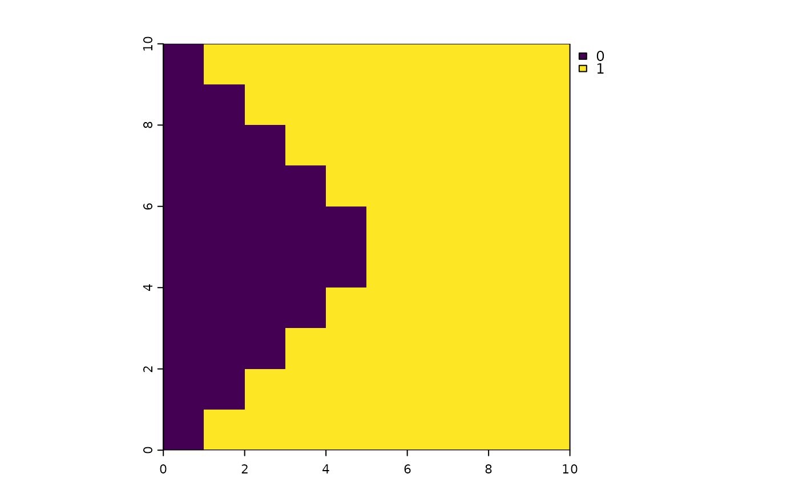

Reclassify natural disturbance and harvest layers
reclassDist.RdClassify disturbances that have occurred in a user defined time
period. The output from this function can be used as either the
natDist or anthroDist inputs for caribouMetrics() or
disturbanceMetrics().
reclassDist(distYr, endYr = 0, numCumYrs, template, dateField)
Arguments
| distYr |
|
|---|---|
| endYr |
|
| numCumYrs |
|
| template |
|
| dateField |
|
Value
Returns a binary RasterLayer with the same dimensions as the
template input. Values of 1 represent areas of disturbance
Examples
#># create template raster lc <- raster::raster(nrows = 10, ncols = 10, xmn = 0, xmx = 10, ymn = 0, ymx = 10, crs = 5070) # create fire polygons corners <- matrix(c(0,0,10,10,5, 0,10,10,0,5), ncol = 2) fireYr <- st_sf(FIRE_YEAR = c(1990, 2000, 2009, 2015), geometry = st_sfc(st_polygon(list(corners[c(1,2,5, 1),])), st_polygon(list(corners[c(2,3,5, 2),])), st_polygon(list(corners[c(3,4,5, 3),])), st_polygon(list(corners[c(4,1,5, 4),])))) fireYr <- st_set_crs(fireYr, 5070) # three polygons should be considered disturbed (1) but the 2015 polygon should # not (0) cumFirePresence <- reclassDist(fireYr, endYr = 2010, numCumYrs = 30, template = lc, dateField = "FIRE_YEAR") plot(cumFirePresence)# with time since disturbance fireYr$FIRE_YEAR <- c(40, 15, 10, 20) cumFirePresence2 <- reclassDist(fireYr, endYr = 0, numCumYrs = 30, template = lc, dateField = "FIRE_YEAR") plot(cumFirePresence2)